A plug-in principle for prompt optimization in multi-agent systems: decompose prompts into a shared coordinator and per-agent executors, optimize each for its role, with any optimizer.
Split every agent prompt into one shared coordinator prompt (how the team collaborates) and per-agent executor prompts (how each agent does its job), and optimize each for its role.
CEPO only specifies the prompt structure and the optimization guidance; the search is done by the optimizer you already use, with no modification. PE2OPROProTeGiMASPO
26 / 26 optimizer × system × benchmark settings improve across 11 benchmarks, 4 domains, 4 multi-agent systems and 4 optimizers. Document +4.3Math · Code +5.1Video +4.6
Multi-agent systems (MAS) require both effective coordination and specialized task execution. Existing prompt optimization approaches typically couple these functions within agent-specific prompts. We introduce Coordinator-Executor Prompt Optimization (CEPO), a general framework for improving prompt optimization in MAS. CEPO separates system-level coordination from agent-level execution through a shared coordinator prompt and agent-specific executor prompts, and guides their updates according to their respective roles. This structure allows shared coordination rules to be refined consistently across agents while keeping execution instructions separately adjustable. CEPO provides the prompt structure and optimization guidance, while existing prompt optimizers perform the underlying search. Extensive experiments spanning 11 benchmarks across four domains demonstrate that applying CEPO to four existing prompt optimizers consistently improves their performance. Ablations and qualitative analyses support the proposed design, while controlled studies on a document-understanding MAS further demonstrate improved optimization budget efficiency and performance scaling with the number of agents.
Today a multi-agent system is optimized one agent prompt at a time. Each prompt gets better alone, but the rules the team shares (hand-offs, conflict flagging, what to cite) are buried in every prompt, get optimized separately, and drift apart.
Pull shared coordination out of every agent into one coordinator prompt pC. Each agent keeps an executor prompt pE(i); its effective prompt is pC ⊕ pE(i). One coordination update reaches every agent at once; execution stays local.
Optimize each layer for its role with distinct meta-instructions: ΦC steers the coordinator toward team-level collaboration, ΦE steers each executor toward its own task. The coordinator learns what the team should do; the executor learns how to do it.
CEPO specifies the prompt components and the guidance; any black-box optimizer performs the search. Applied to PE2, OPRO, ProTeGi and MASPO on document QA, math, code and long-video understanding, it improves every optimizer × system × benchmark setting we tried, with better budget efficiency and gains that grow with the number of agents.
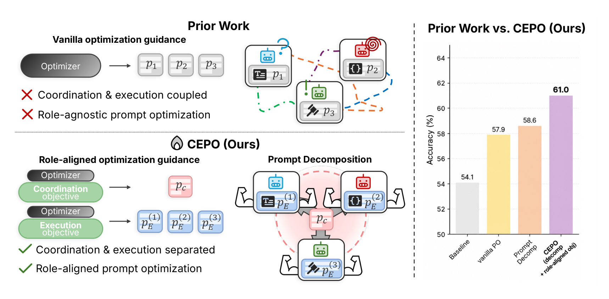
pC and agent-specific executor prompts pE, and guides their updates by role. On MDocAgent + MMLongBench-Doc, a vanilla optimizer improves the baseline from 54.1 to 57.9, prompt decomposition reaches 58.6, and decomposition with role-aligned optimization (CEPO) reaches 61.0.
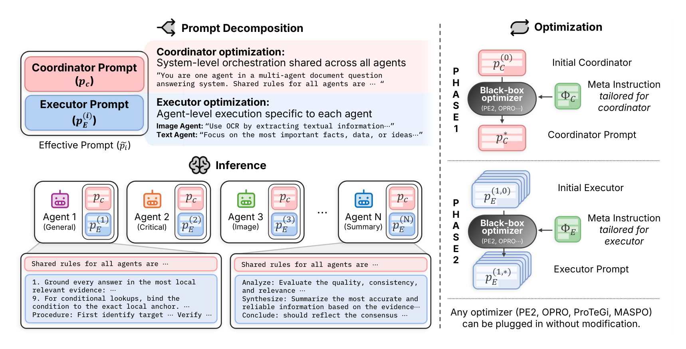
pC (shared across all agents) captures coordination signals: team composition, role assignment, shared norms for reasoning. Each executor prompt pE(i) (local to agent Ai) captures execution signals: evidence anchoring, task scoping, procedure execution. At inference, agent Ai receives pC ⊕ pE(i). The two layers are optimized sequentially with role-aligned guidance by an existing optimizer O (PE2, OPRO, ProTeGi, MASPO) plugged in without modification.
Initialize executor prompts from the system’s default prompts; let an LLM draft an initial coordinator prompt from a description of the system and its agent roles.
With executors frozen, the optimizer updates pC for TC iterations under ΦC; the best iterate by system-level validation score is kept.
With pC★ frozen, selected executor prompts are updated for TE iterations under ΦE, each selected by validation.
Candidate generation and search follow the underlying optimizer. CEPO changes only what is optimized and the guidance for optimizing it.
Principle 1: coordinator-executor prompt decomposition. System-level coordination is represented by a dedicated,
shared prompt parameter. The coordinator specifies how agents share findings, flag disagreements and support
subsequent stages; each executor specifies how its agent carries out its assigned task. Updating
pC changes the shared instructions received by all agents, whereas updating
pE(i) changes only agent Ai’s local instructions.
Principle 2: role-aligned optimization. Role-specific meta-instructions are supplied to the underlying
optimizer. ΦC directs it to refine system-level collaboration
(cross-agent communication, handling of conflicting evidence, shared reasoning norms);
ΦE directs it to refine the target agent’s execution (task scoping,
evidence use, concrete procedures). Both layers are still selected by the same system-level objective; swapping
the guidance between layers is the worst assignment (Table 6).
Tables from the paper. Green subscripts are gains over the unoptimized system; CEPO rows are highlighted. Every optimizer × system × benchmark setting improves.
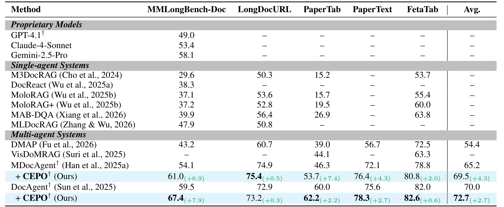
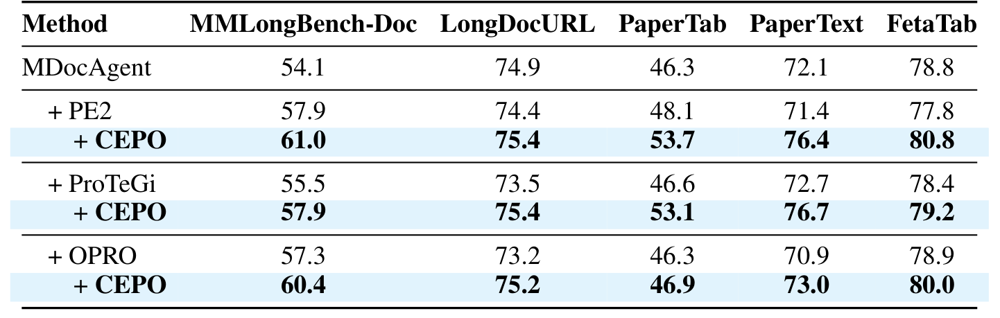
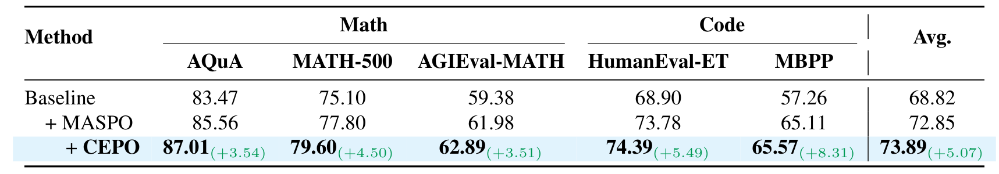
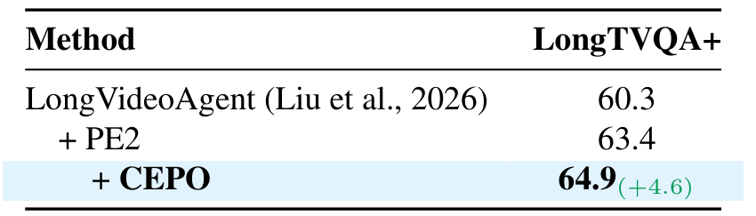
MDocAgent on MMLongBench-Doc with PE2. Both principles matter, the gains grow with the team, and CEPO reaches a higher score with fewer optimizer and MAS calls.
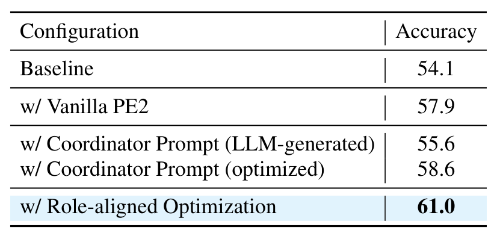
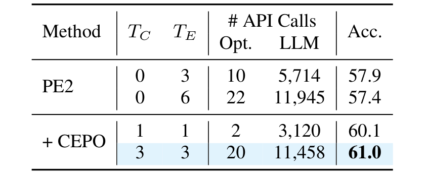
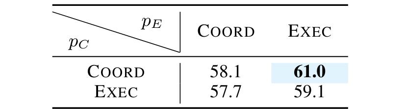
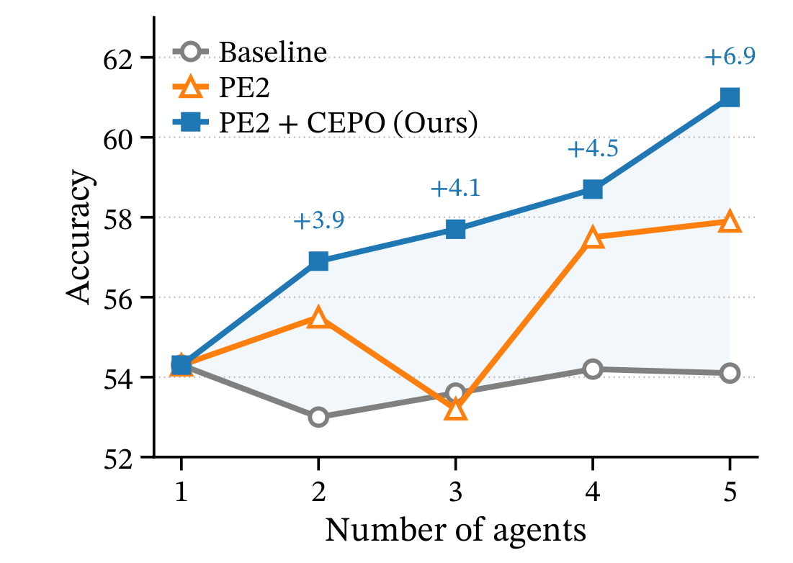
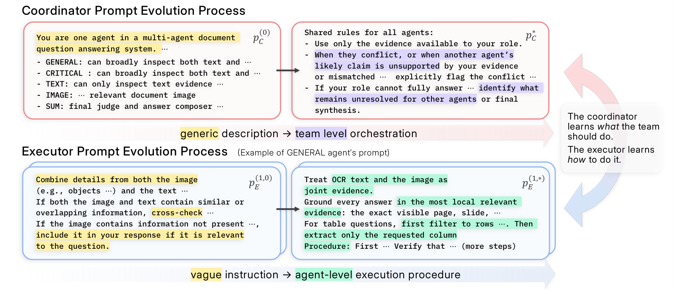
@article{kim2026cepo, title = {CEPO: A General Framework for Improving Prompt Optimization in Multi-Agent Systems}, author = {Kim, Jongha and Lee, Seohyun and Chung, Jonathan Minho and Yoon, Jinsung and Kim, Hyunwoo J.}, journal = {arXiv preprint arXiv:2610.34722}, year = {2026} }